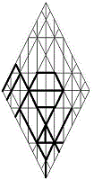

owcwhy Yahushua יהושוע
Angel of the Presence
The
gospels speak to the presence of Yahushua within the man Y’shua,
now called “Jesus.” This Essene Teacher of Righteousness walked,
not in his natural name, but in the spiritual
Name given to him by our
Father. He had been reborn in the wilderness: the bitterness (Miriam,
Mary) within his heart had been suffused with the Father’s Presence, and
he became another man.
In Torah, name changes reflect spiritual change. Like Y’shua, Hoshea
ocwh
ben Nun was called to serve, not in his own name, but in the Name that
was
given
to him by Father
hy.
“Joshua” (Y’shua is a better English spelling) was appropriate to Osee’s
calling; for this son of Ephraim was to apprentice in the tent of Moshe,
so that he could lead Y’SharAL beyond Yordan.
 All are reborn in this manner until perfection. In recognition of
that end, Matthew One sets forth principles and qualities of the Godhead
that can be measured within each of us during the
process of
salvation, during which
Yh
hy
aligns us with the Measurement first perceived in the man of the
gospels, the true and faithful witness, Y’shua.
All are reborn in this manner until perfection. In recognition of
that end, Matthew One sets forth principles and qualities of the Godhead
that can be measured within each of us during the
process of
salvation, during which
Yh
hy
aligns us with the Measurement first perceived in the man of the
gospels, the true and faithful witness, Y’shua.
Yh
hy
gave
y
us the Breath of Life
h,
and he upholds
w
our spirits
c
as he entrusts
w
us to Earth
o.
Blessed
y
by the projection
h
of our Father's Wisdom
c
and by the nourishment
w
of his Understanding
o,
we humbly
y
acknowledge
h
the blessing of
his patience
w
as we struggle
c
within the womb
w
of Creation
o.
Keys to the Kingdom were hidden in gospel parable concerning a
pattern of names. Applying that pattern in this context, we can say that
ocwh
(Cephas, a small, hollow stone) can become a rock
ocwhy
(Petros) through spiritual accretion, as he accepts that
owcwhy
is the Boulder (Petras) on Sinai, the holy Mountain of
hwhy.
Yahushua, the Shout—the Projection (Son)—of God, blesses
y
our lives
h,
nurturing us
w
with spiritual food
c
appropriate
w
to our understandings
o.
He offers
y
enlightenment
h
to all who surrender
w
their spirits
c
to his mercy
w
and compassion
o. The
true and faithful witness, Y’shua cautioned us that he could do nothing
on his own: that it’s enough for the servant to be
as
his Lord. Even so, speaking through Y’shua, Yahushua confessed that
there were things only the Father knew: for the universe could not
contain HaShem
hwhy;
and he therefore gave his Word—his Shout—to serve as the interface
between the Creator and the realms of Creation.
Gematria
397
zxc:
The contentious struggle
c
for transformation
x
will accomplish its purpose
z;
Numerology 64
ds
>
46
wm
>
10
y
>
1
a:
for the petitions
s
of sorrowful hearts
d
are answered
m
in the merciful outpours of
w
blessings that come at the hand
y
of the Father
a.
Targum:
As Projection of Father
hy,
Yahushua is the Servant
y
of Life
h
who sacrificed
w
his
glory
c
to sustain
w
Creation
o.
| Stepping Stones | Stepping Stones | |||
|
site |
Font |
book |